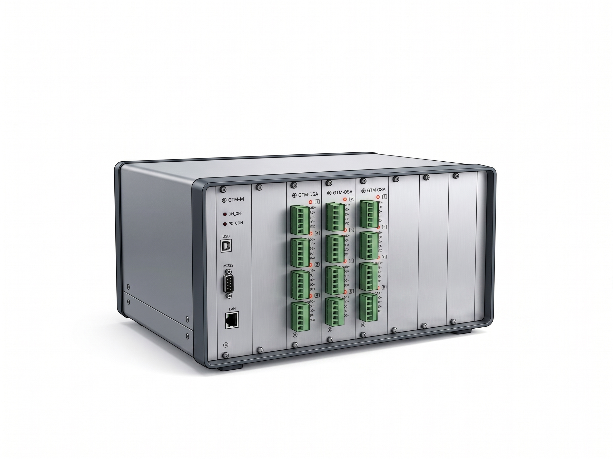

스트레인 · 온도 · 진동 통합 계측 솔루션. 모듈형 슬롯 구조로 최대 128채널 동기 수집, 채널당 최대 1,000Hz 고속 샘플링을 지원하는 고성능 산업용 DAQ 시스템입니다.

01 · OVERVIEW
GTDL은 스트레인게이지, 온도, 진동, 변위 등 다양한 물리량을 동시에 정밀 계측하기 위한 고성능 모듈형 데이터수집장치(DAQ System)입니다.
하나의 메인 유닛에 목적에 맞는 측정 모듈을 슬롯 방식으로 자유롭게 조합하여, 복잡한 계측 환경도 단일 시스템으로 통합 대응합니다. 스트레인 브리지 회로가 장비 내부에 내장되어 있어 외장 브리지 박스 없이 즉시 운용이 가능하며, 순간적인 과도 응력도 빠짐없이 포착하는 채널당 1,000Hz 고속 동기 샘플링을 지원합니다.
02 · FEATURES
03 · MODELS
04 · SPECIFICATIONS
| 샘플링 속도 | 동적 1,000Hz ~ 5Hz / 정적 최소 0.1초 |
| 동작 모드 | 정적 · 동적 · 사이클(피로내구) |
| 사이클 모드 | min / max 자동 추적 |
| 전채널 동기 | 채널 간 시간 지연 없음 |
| 내장 브리지 | 120Ω, 350Ω |
| 최대 채널 수 | 128 CH (다대 연결 시) |
| 모듈 방식 | 슬롯 방식 자유 조합 |
| 커넥터 (선택) | 나사단자 / Tajimi M12 |
| 인터페이스 | USB / LAN (PC 연동) |
| Custom 대응 | 커넥터 · 케이스 맞춤 제작 |
05 · MODULES
06 · SOFTWARE
07 · APPLICATIONS
씨앤디테크는 시험 특성에 맞는 센서·데이터로거 최적 구성을 제안드립니다. 사양과 요구 사항을 알려주시면 맞춤형 솔루션을 제안드립니다.